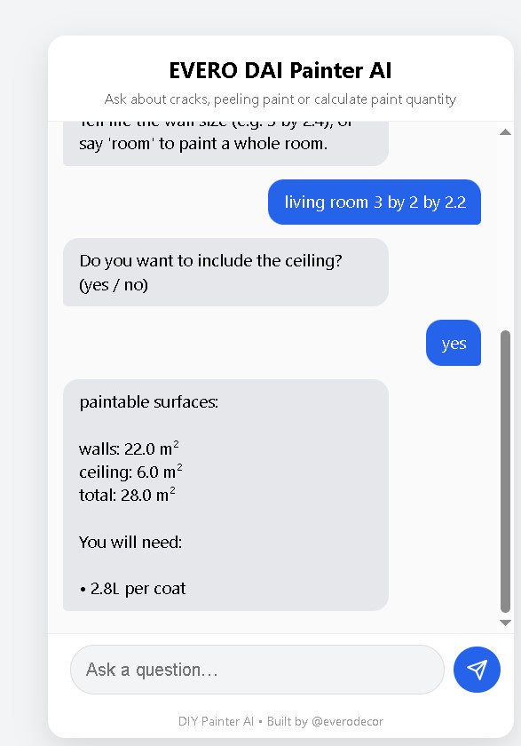

How Much Paint Do I Need? Paint Coverage Explained (2026)
Working out how much paint you need depends on the area you are painting, the number of coats, and the paint’s coverage in m² per litre. In this guide, a London decorator explains how paint coverage works, why trade paint covers more, how water-based and oil-based paints differ, and how to get an instant estimate with the eVeroDAI paint calculator.

As a professional painter and decorator in London, I estimate paint quantities on every job. Buying too little means a delayed finish and a possible colour mismatch between batches. Buying too much means wasted money, especially with premium paints.
This guide explains paint coverage and the factors that change how far a tin will go, whether you are a homeowner planning a weekend project or a decorator pricing a full flat.
What Is Paint Coverage?
Paint coverage is the area one litre of paint can cover in a single coat, measured in square metres per litre (m²/L). You will find it printed on the tin, usually as a figure such as “up to 14 m² per litre”.
That figure is a best-case result on a smooth, sealed, properly prepared surface. In real homes, coverage is often lower, which is why a good estimate always allows for the condition of the surface.
| Paint Type | Typical Coverage |
|---|---|
| Standard retail / budget paint | Less than 10 m²/L |
| Mid-range paint | 10 – 13 m²/L |
| Trade paint (e.g. Dulux Trade) | 14 m²/L or more |
These are typical ranges. Always check the tin or technical data sheet for the exact figure for the product and finish you are using.
Why Trade Paint Covers More: Pigment and Components
The main reason trade paint reaches 14 m²/L or more, while many standard paints stay below 10 m²/L, is what is inside the tin. Coverage is really about how well a thin layer of paint hides the surface underneath, which is called opacity.
Pigment quality and concentration
Titanium dioxide is the main white pigment in most paints and is what gives hiding power. A higher concentration of good-quality pigment means the paint hides the wall in fewer coats and spreads further per litre. Cheaper paints often use less of it.
Binder quality
The binder (usually acrylic or vinyl resin in water-based paints, or alkyd resin in oil-based paints) holds the pigment together and bonds it to the surface. A better binder helps the paint spread evenly, flow well and form a durable film without needing a thick layer.
Solids content
Paint is a mixture of solids and liquid. The higher the volume of solids, the more material is left on the surface once the paint dries. High-solids paints tend to cover better and are less prone to a thin, patchy finish.
Fillers (extenders)
Extenders add bulk and affect the finish, but too much filler in place of pigment reduces hiding power. Standard paints with a lot of filler and little pigment will usually need extra coats.
Particle size and dispersion
Finely ground, well-dispersed pigment particles scatter light more efficiently, which improves opacity. This is one of the reasons professional paints feel smoother and more consistent when applied.
A cheaper paint that needs three coats can cost more in time and material than a trade paint that covers in two. Coverage per litre matters more than the price per tin.
Water-Based vs Oil-Based Paint Coverage
The type of paint also affects how far it goes. Water-based paints (emulsions and water-based satin, eggshell and gloss) are now the standard choice for most interiors. Oil-based paints (solvent-based gloss, satin and undercoat) are mainly used on woodwork and metal.
Water-based paint
Water-based trade paints typically cover around 12–16 m²/L on a smooth, sealed surface. Matt emulsions on walls and ceilings are applied by roller, spread easily and are quick to recoat. Coverage drops on fresh plaster, filler or porous walls, which soak up the first coat unless a mist coat or primer is applied.
Oil-based paint
Oil-based paints are commonly quoted at around 14–17 m²/L on primed, smooth woodwork. They flow and level well, which gives a hard-wearing finish on doors, skirting and trim. On bare or porous wood the first coat can be absorbed heavily, so real coverage can be much lower until the surface is sealed.
| Paint Base | Typical Coverage | Best Used On |
|---|---|---|
| Water-based (trade emulsion) | 12 – 16 m²/L | Walls and ceilings |
| Water-based (satin / gloss) | 12 – 15 m²/L | Woodwork and trim |
| Oil-based (satin / gloss / undercoat) | 14 – 17 m²/L | Primed woodwork and metal |
These figures are guides only and vary by brand, colour and finish. Always check the technical data sheet for the exact product.
Metrics That Affect Your Paint Estimate
To estimate paint consumption properly, you need more than the size of the room. These are the measurements and factors decorators take into account:
- Wall area (m²): total perimeter of the room multiplied by the ceiling height.
- Ceiling area (m²): room length multiplied by width.
- Doors and windows: areas you are not painting are deducted from the wall area.
- Additional surfaces: skirting boards, architraves, doors and window frames, usually estimated separately because they use a different paint.
- Paint coverage (m²/L): taken from the tin or data sheet, and based on whether the paint is water-based or oil-based.
- Number of coats: two is standard. New plaster, bare surfaces and dark-to-light colour changes can need more.
- Surface porosity: new plaster, filler and bare wood absorb paint and reduce real coverage, sometimes significantly.
- Surface texture: textured walls, Artex and rough masonry use more paint than smooth plaster.
- Colour change: deep or strong colours over light walls, or the reverse, often need an extra coat.
- Wastage: allow a little extra for cutting in, tray loss and touch-ups.
Use the eVeroDAI Paint Calculator
Instead of working through the numbers by hand, you can enter your room measurements, number of coats and paint coverage into the eVeroDAI paint calculator and get an estimate of how many litres you need.
It is built around the same metrics decorators use on real jobs, so you can compare how a trade paint at 14 m²/L or more differs from a standard paint under 10 m²/L before you buy.
Open the paint calculatorIf you are a decorator or sole trader, eVeroDAI also generates conversational PDF quotes and invoices, so you can turn your estimate into a professional quote.
Frequently Asked Questions
What is a good paint coverage per litre?
Around 14 m²/L or more is good coverage and is typical of trade paints. Standard paints often cover less than 10 m²/L, meaning you need more litres and often more coats.
Does oil-based paint cover more than water-based paint?
On smooth, primed woodwork, oil-based paints are often quoted at slightly higher coverage than water-based equivalents. On walls, water-based trade emulsions are the standard choice and cover well. Always compare the coverage figure on the data sheet for the exact products.
Does a darker colour need more paint?
Often, yes. Strong or deep colours and big colour changes can need a third coat, particularly over a light or patchy surface. A tinted primer can help reduce the number of coats.
Should I buy extra paint?
Allow a little extra and keep any leftover for touch-ups. Buying all the paint for one room at the same time also helps avoid slight colour differences between batches.
How do I work out how much paint I need quickly?
Use the eVeroDAI paint calculator. Enter your room size, coats and paint coverage to get an estimate in litres.
Need a Painter and Decorator in London?
EveroDecor provides professional painting services across London, focusing on preparation, quality materials, and long-lasting finishes.
View Our Services